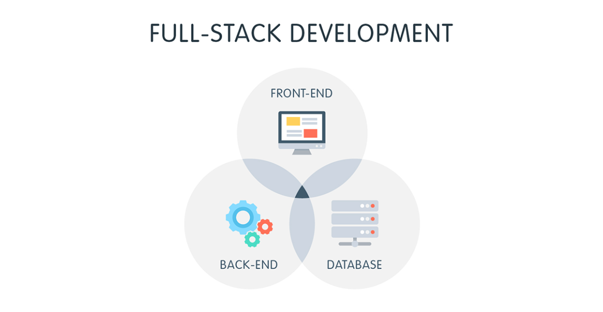

Front-end (Giao diện người dùng)
Các công nghệ front-end tập trung vào việc phát triển giao diện web, nơi người dùng tương tác với ứng dụng.
- HTML/CSS/JavaScript: Nền tảng cơ bản cho bất kỳ ứng dụng web nào.
- HTML: (HyperText Markup Language) dùng để tạo cấu trúc trang web.
- CSS: (Cascading Style Sheets) giúp định dạng và thiết kế giao diện.
- JavaScript: Giúp trang web có tính năng động và tương tác.
- Framework/Thư viện JavaScript:
- React.js: Thư viện UI phổ biến do Facebook phát triển, dùng để xây dựng giao diện người dùng dựa trên component.
- Vue.js: Framework nhẹ và dễ học, cung cấp các tính năng để xây dựng ứng dụng SPA (Single Page Application).
- Angular: Framework của Google cung cấp giải pháp toàn diện cho phát triển ứng dụng web, với hệ thống routing, state management, và dependency injection.
- CSS Frameworks:
- Bootstrap: Framework CSS phổ biến giúp xây dựng giao diện nhanh chóng và responsive.
- Tailwind CSS: Framework utility-first, cho phép viết CSS nhanh chóng bằng cách sử dụng các class.

Back-end
Back-end bao gồm các công nghệ chịu trách nhiệm quản lý dữ liệu, xử lý logic và giao tiếp với cơ sở dữ liệu.
- Node.js: Nền tảng JavaScript chạy phía server, cho phép phát triển ứng dụng server-side bằng JavaScript.
- Express.js: Framework nhẹ dành cho Node.js, giúp xây dựng API và các ứng dụng server đơn giản.
- PHP: Ngôn ngữ lập trình phổ biến với nhiều hệ quản trị nội dung như WordPress. Phù hợp cho phát triển web truyền thống.
- Java (Spring Boot): Framework mạnh mẽ cho việc xây dựng ứng dụng web trong môi trường Java. Spring Boot cung cấp cấu hình tự động và hỗ trợ tốt cho REST API.
- Python (Django, Flask):
- Django: Framework Python mạnh mẽ, đi kèm với nhiều công cụ như ORM, authentication, và admin panel.
- Flask: Micro-framework linh hoạt cho những dự án nhỏ hoặc cần tùy chỉnh.

Cơ sở dữ liệu
- SQL:
- MySQL: Hệ quản trị cơ sở dữ liệu quan hệ phổ biến, dùng SQL để quản lý dữ liệu.
- PostgreSQL: Hệ quản trị cơ sở dữ liệu quan hệ mạnh mẽ, cũng sử dụng SQL để quản lý dữ liệu.
- NoSQL:
- MongoDB: Cơ sở dữ liệu NoSQL phổ biến, sử dụng cấu trúc document-based (dữ liệu lưu dưới dạng JSON).
- Redis: Hệ thống lưu trữ dữ liệu dạng key-value, thường dùng cho cache hoặc các hệ thống lưu trữ tạm thời.